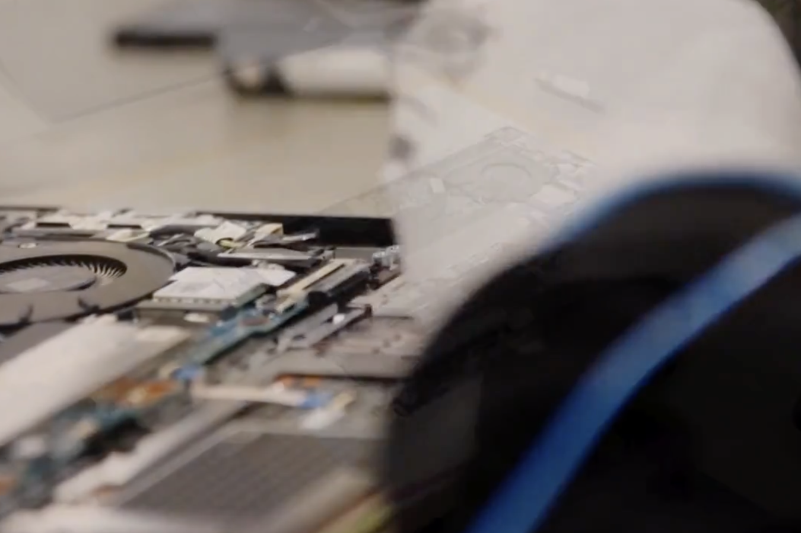

8.3bn SEK
Foxway group revenue
74%
Revenue from circular activities
292 MSEK
Adjusted EBITDA
The opportunity
The next device doesn't always need to be a new one.
Organisations need dependable technology, while devices and components contain value long after their first use. Foxway helps customers make better use of existing equipment through refurbishment, reuse and lifecycle services.

The circular model
Keep the value in the device, not just the device in circulation.
Foxway combines sourcing, refurbishment, resale and responsible recycling to retain the value embedded in IT equipment. Each device can be assessed and directed to the next best use.
Bankability indicators
Invest to build a circular IT ecosystem
Foxway combines customer demand, device expertise and operational scale to grow a circular technology platform. Its model is designed to connect financial performance with the efficient use of resources.
Customer demand
for circular IT
Reuse at scale
through services
Financial returns
from retained value

“Circularity can create strong financial returns when it is built into the business model.”